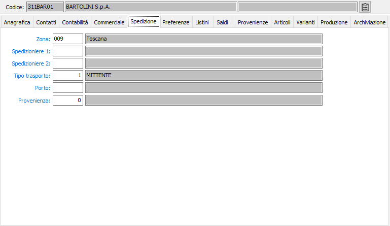

Spedizione

ZONA: codice alfanumerico di 3 caratteri, presente nella tabella Zone, per definire la zona di ubicazione del fornitore utile a fini statistici. Sul campo sono attive le funzioni di ricerca (F9) e manutenzione (CTRL+W) sulla tabella stessa.
SPEDIZIONIERE 1: eventuale codice alfanumerico di 3 caratteri, presente nella tabella Spedizionieri, per definire lo spedizioniere richiesto o definito. Viene proposto in sede di emissione documenti di trasporto. Sul campo sono attive le funzioni di ricerca (F9) e manutenzione (CTRL+W) sulla tabella stessa.
SPEDIZIONIERE 2: eventuale codice alfanumerico di 3 caratteri, presente nella tabella Spedizionieri, per definire il secondo spedizioniere richiesto o definito. Viene proposto in sede di emissione documenti di trasporto. Sul campo sono attive le funzioni di ricerca (F9) e manutenzione (CTRL+W) sulla tabella stessa.
TIPO TRASPORTO: codice numerico, presente nella tabella Tipi trasporto, per memorizzare le modalità di trasporto concordate. Viene proposto in sede di emissione documenti di trasporto. Sul campo sono attive le funzioni di ricerca (F9) e manutenzione (CTRL+W) sulla tabella stessa.
PORTO: codice alfanumerico di 3 caratteri, presente nella tabella Porti, per memorizzare le modalità di resa concordate. Viene proposto in sede di emissione documenti di trasporto. Sul campo sono attive le funzioni di ricerca (F9) e manutenzione (CTRL+W) sulla tabella stessa.
PROVENIENZA: codice numerico che indica la provenienza preferenziale del fornitore per quanto riguarda la provenienza della merce. Sul campo sono attive le funzioni di ricerca (F9) sulla tabella stessa.